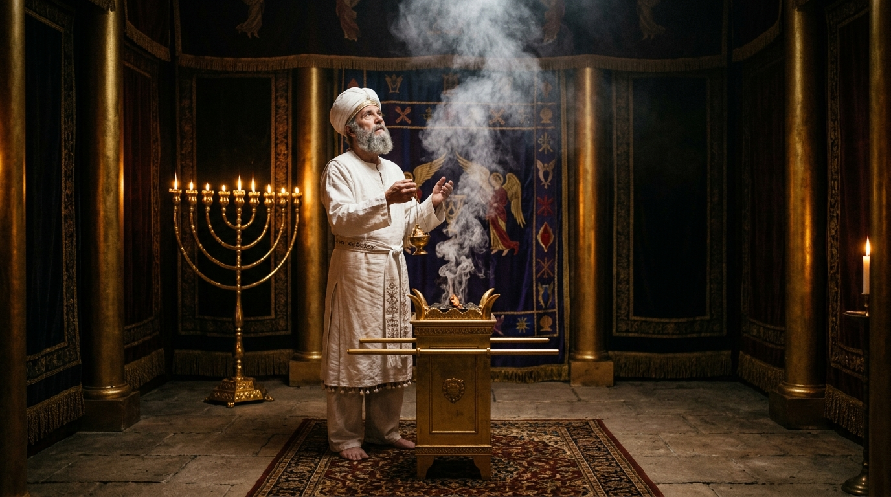

O Tribunal de Deus: O Dia em que o Pecado foi Escondido
O calendário bíblico de festas não é uma lista aleatória de feriados; é o relógio profético de Deus para a redenção da humanidade. No outono bíblico, a Festa das Trombetas (Yom Teruah) soava o alarme, despertando o povo para o juízo iminente. A partir daquele toque, iniciavam-se os "Dez Dias de Temor" (Yamim Noraim), um período de profundo arrependimento e introspecção que culminava no décimo dia: Yom Kippur, o Dia da Expiação.
Ao contrário de todas as outras festas de Israel, que eram marcadas por colheitas, banquetes fartos, danças e alegria transbordante, o Yom Kippur era o dia mais sombrio, solene e sagrado do ano. Era o único dia em que Deus ordenava um jejum absoluto, dizendo: "Afligireis as vossas almas" (Levítico 16:29). Neste dia, toda a nação parava de respirar, pois o destino espiritual de Israel para o ano seguinte seria decidido no tribunal celestial através do sangue levado para trás do véu.
Índice do Estudo:
- 1. O Sumo Sacerdote: Despido de Glória
- 2. O Sangue no Santo dos Santos (A Propiciação)
- 3. Azazel: O Mistério do Bode Emissário (A Expiação)
- 4. O Fio Vermelho: A Fascinante Tradição do Talmude
- 5. Jesus Cristo: O Cumprimento do Duplo Sacrifício
- 6. O Aspecto Escatológico: O Choro de Israel
- 7. Tabela de Resumo e Aplicação Prática
1. O Sumo Sacerdote: Despido de Glória
A tensão do Yom Kippur caía sobre os ombros de um único homem: o Sumo Sacerdote (Kohen Gadol). Durante o ano inteiro, ele oficiava usando vestimentas douradas (Bigdei Zahav), adornadas com pedras preciosas, fios de ouro, azul e púrpura, que refletiam a glória do seu ofício.
No entanto, para entrar na presença direta de Deus no Yom Kippur, ele recebia uma ordem estrita: ele precisava se banhar, despir-se de toda aquela glória terrena e vestir-se apenas com uma túnica simples de linho branco puro (Bigdei Lavan). Ele não podia entrar diante do Trono de Deus exibindo riquezas ou méritos humanos; ele precisava entrar como um humilde servo implorando por misericórdia. (Da mesma forma, Jesus esvaziou-se de Sua glória celestial para encarnar e realizar a nossa expiação - Filipenses 2:7).
2. O Sangue no Santo dos Santos (A Propiciação)
O Templo possuía uma sala cúbica, o Santo dos Santos (Kodesh Hakodashim), onde habitava a Presença manifesta de Deus sobre a Arca da Aliança. Ninguém podia entrar lá sob pena de morte instantânea, exceto o Sumo Sacerdote, apenas neste dia específico.
O ritual começava com o sacerdote oferecendo um novilho pelos seus próprios pecados e pelos de sua família (pois um pecador não pode mediar a salvação de outros sem antes estar limpo). Em seguida, ele pegava um incensário cheio de brasas e incenso perfumado para criar uma nuvem espessa dentro do Santo dos Santos, cobrindo o Propiciatório (a tampa de ouro da Arca) para que a visão direta da glória de Deus não o matasse. Só então, com temor e tremor, ele aspergia o sangue sete vezes sobre a Arca. Este sangue apaziguava a ira e a justiça santa de Deus contra os pecados de Israel cometidos naquele ano. A esse ato dá-se o nome teológico de Propiciação.
3. Azazel: O Mistério do Bode Emissário (A Expiação)
A característica mais singular do Yom Kippur envolvia dois bodes idênticos. O Sumo Sacerdote lançava sortes sobre eles: um bode seria "Para o Senhor" e o outro seria "Para Azazel" (o emissário).
O bode "Para o Senhor" era morto, e seu sangue era levado para o Santo dos Santos para fazer a propiciação. Mas o segundo bode permanecia vivo. O Sumo Sacerdote colocava as duas mãos com força sobre a cabeça deste animal vivo e confessava em voz alta todas as iniquidades, rebeliões e pecados ocultos de Israel. Este ato simbolizava a imputação — a transferência da culpa do povo para um substituto inocente.
Em seguida, um homem designado conduzia esse bode vivo para fora de Jerusalém, soltando-o nas profundezas do deserto árido para nunca mais voltar. Este segundo bode lidava com a Expiação (a remoção da culpa). Enquanto o primeiro bode satisfazia a justiça de Deus (Propiciação), o segundo bode limpava a consciência do povo (Expiação), mostrando visualmente os seus pecados desaparecendo no horizonte para sempre.
4. O Fio Vermelho: A Fascinante Tradição do Talmude
Existe um registro histórico impressionante na tradição rabínica judaica (no Talmude da Babilônia, tratado Yoma 39b). Os rabinos relatam que, durante o Yom Kippur, um fio de lã vermelho-escarlate era amarrado nos chifres do bode emissário (Azazel) e um pedaço na porta do Templo. Quando o bode era empurrado no deserto, miraculosamente, o fio na porta do Templo ficava branco, como cumprimento de Isaías 1:18: "Ainda que os vossos pecados sejam como a escarlata, eles se tornarão brancos como a neve". O povo então celebrava, sabendo que Deus havia aceito o sacrifício.
No entanto, o próprio Talmude (um documento judaico não-cristão) admite um detalhe perturbador: durante os últimos 40 anos antes da destruição do Templo (de 30 d.C. a 70 d.C.), o fio escarlate parou de ficar branco. As portas do Templo abriram-se sozinhas e os sacrifícios deixaram de ser aceitos por Deus. O que aconteceu exatamente cerca do ano 30 d.C.? Jesus Cristo, o verdadeiro sacrifício, foi crucificado. Deus fechou o sistema antigo porque o sacrifício perfeito havia acabado de ser consumado!
5. Jesus Cristo: O Cumprimento do Duplo Sacrifício
O autor da Carta aos Hebreus (capítulos 9 e 10) dedica seu texto a explicar que o Yom Kippur era apenas uma "sombra dos bens vindouros". O sangue de bodes nunca pôde remover pecados; ele precisava ser repetido anualmente, lembrando o povo de que a dívida continuava aberta.
Mas então veio Cristo. Ele cumpriu o mistério do Yom Kippur de forma dupla e insuperável. Ele foi o Primeiro Bode: derramou Seu sangue para satisfazer a justiça divina de uma vez por todas. No instante de Sua morte, o pesado véu do Templo rasgou-se de alto a baixo, provando que o acesso ao Pai não era mais restrito a um homem, num dia do ano. Mas Ele também foi o Segundo Bode (o Emissário): Ele "carregou em seu corpo os nossos pecados" (1 Pedro 2:24), foi levado para fora dos portões da cidade de Jerusalém e levou a nossa condenação para a terra do esquecimento.
Mais do que o sacrifício, Jesus é o próprio Sumo Sacerdote (da Ordem de Melquisedeque), que não entrou num Templo de pedras na terra, "mas no próprio céu, para agora comparecer por nós perante a face de Deus" (Hebreus 9:24), garantindo-nos uma redenção eterna.
6. O Aspecto Escatológico: O Choro de Israel
A Festa das Trombetas (arrebatamento/alarme) já foi ativada na Igreja, mas profeticamente, o Yom Kippur aponta para o fim da Grande Tribulação em relação a Israel. O profeta Zacarias profetiza que haverá um dia de arrependimento nacional profundo, quando os judeus finalmente "olharão para mim, a quem traspassaram, e o prantearão como quem chora por um filho único" (Zacarias 12:10). O Yom Kippur escatológico será o dia em que Israel, como nação, reconhecerá Jesus como Messias, sendo lavados no dia do juízo e restaurados para o Reino Milenar.
7. Tabela de Resumo e Aplicação Prática
| Elemento do Yom Kippur | A Sombra no Antigo Testamento | A Realidade Eterna em Cristo |
|---|---|---|
| O Sumo Sacerdote | Entrava com temor, uma vez ao ano, precisando sacrificar por si mesmo. | Jesus entrou no Céu sem pecado, uma vez por todas, sentando-se à destra do Pai. |
| Primeiro Bode | Sangue aspergido na Arca (Propiciação). Satisfez a justiça por um ano. | O sangue de Cristo apaziguou a ira de Deus e rasgou o véu definitivamente. |
| Segundo Bode (Azazel) | Levava os pecados para longe da vista do acampamento (Expiação visual). | Jesus foi crucificado fora da cidade, removendo a culpa de nossa consciência. |
| O Jejum de Aflição | Dia de tristeza e medo pelo julgamento iminente. | O crente hoje descansa em paz, sabendo que "nenhuma condenação há" (Rm 8:1). |
💡 Aplicação Prática: O que aprendemos hoje?
O estudo do Yom Kippur é o remédio definitivo contra o legalismo e a culpa. Durante 1.500 anos de Antigo Testamento, a consciência do homem nunca teve descanso. Todo ano, o sangue derramado lembrava os judeus de que a dívida estava lá, pendente. Eles viam o bode desaparecer no deserto, mas sabiam que no ano seguinte teriam que repetir tudo de novo.
A glória do Cristianismo é que o nosso Yom Kippur já foi realizado e finalizado! Quando o autor de Hebreus diz que Cristo ofereceu um único sacrifício e "assentou-se à destra de Deus" (Hb 10:12), o verbo "assentar-se" é crucial. Não havia cadeiras no Santo dos Santos do Templo terreno porque o trabalho do sacerdote humano nunca acabava. Mas Jesus sentou-se porque o trabalho de salvar a sua alma acabou! Está pago. Se você colocou sua fé nEle, pare de viver um "cristianismo de Yom Kippur diário", afligindo sua alma com culpa por pecados que Deus já lançou no mar do esquecimento. O véu está rasgado. Entre com ousadia diante do Trono da Graça!
Continue sua jornada:
- Voltar ⬅️ Índice de Festas Bíblicas
- Temas 📚 Ver todos os estudos
Apoie este projeto 🌱
Se este estudo foi útil, considere apoiar a manutenção do site.
Chave PIX (Celular):
marcosmontanaria@gmail.com